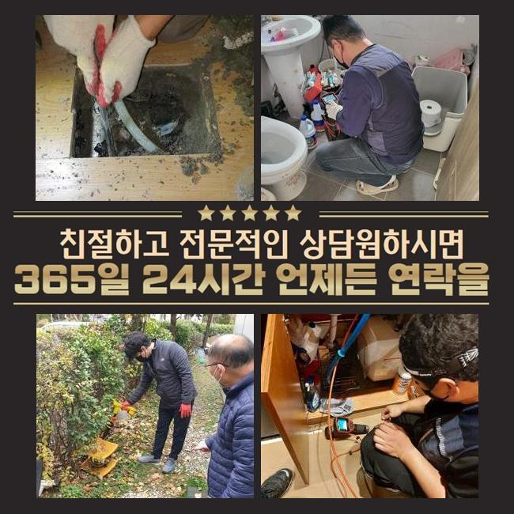
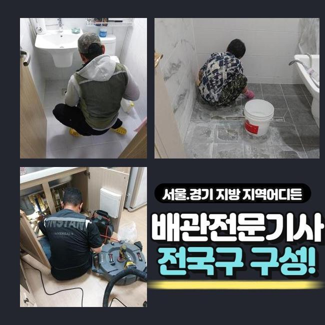
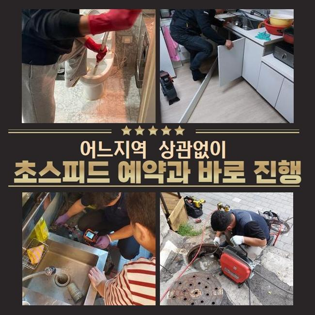
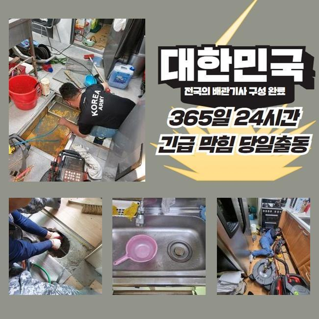
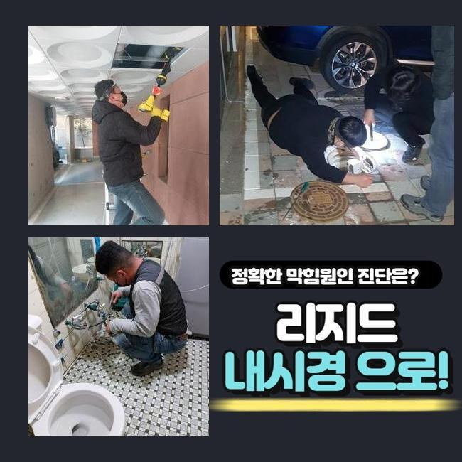
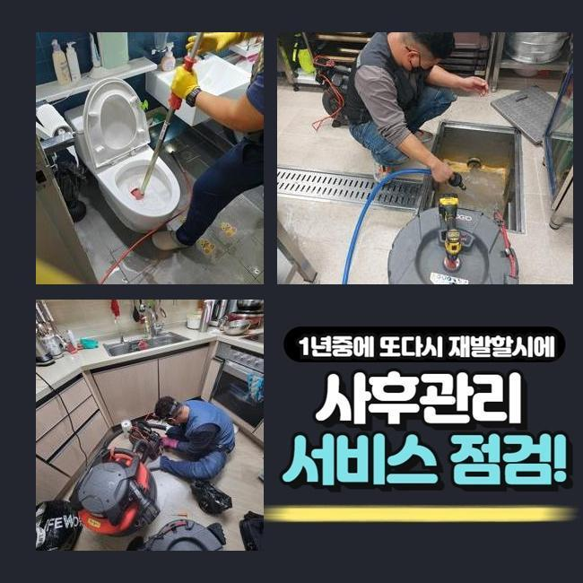
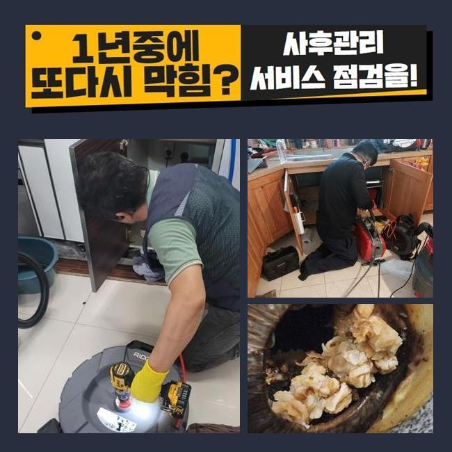

🏠 이천 중리동화장실막힘 호법면 배수구뚫기 설비
용인 하수구막힘 전문 시공 후기

📋 작업 개요
- 위치: 용인
- 서비스 유형: 하수구막힘, 배관막힘, 집수정막힘, 역류해결, 뚫는업체, 배관청소, 설비공사
- 작업 일시: 2024. 12. 19. 11:47
- 업체명: 하수구수사대 (010-5615-2118)
🔍 문제 상황
이천 중리동화장실막힘 호법면 배수구뚫기 설비
연립 주택 내부 하수설비를 점검하지 않는 경우엔 불순물이 쌓여 배수라인의 이상이 나타날 가능성이 높아집니다
이러한 이유로 연식이 오래 되신 경우엔 전문업체에 의뢰하셔서 하수구의 상태를 파악하시는 것이 좋습니다
점심쯤이 지나서 의뢰인께서 하수라인이 막혔다고 긴급하게 전화주셨어요
출동해보니 약간 외진 곳의 주택이였고 주변에는 캠핑업체가 영업을 하고있는 상황이였습니다
건물을 올린지 오래되지도 않았지만 바깥에서 역류상황이 자주 보인다고 하셨어요
살펴보니 창고에 설치 되어있는 집수정에서 밖에 위치해있는 정화조쪽으로 흘러가게 되는 상황이였어요
정화조가 위치한 곳이 꽤 멀어서 이곳에 설치 하셨다고 말씀하셨어요
사례자님께 문제부위를 발견해도 중간 점검구가 없는 경우엔 생각보다 작업이 길어질 수 있다고 설명 해드렸더니 동의를 해주셨습니다
집수정에서 내시경기를 진입시켰으나 침전물이 너무 많아 더이상 라인을 투입시킬 수가 없었어요

🔎 원인 분석
💡 전문가 진단: 정밀 진단 장비를 사용하여 슬러지의 고착 여부를 판명하고 타격/세척 작업을 실시했습니다.
슬러지가 완전히 막아버린 현재상태를 의뢰인에게도 보여드리면서 자세하게 말씀드렸어요
샤프트기계로 수리를 진행했습니다
기기에 머리카락과 물티슈가 어마어마하게 엉켜 나오네요
연립주택의 역류문제의 이유들은 물티슈와 머리카락등이 흔하게 나와요
의뢰인님께 이러한 이물질은 따로 폐기하시라고 말씀 드렸어요
화학적 성분의 물티슈등은 종이로 만든게 아닌 플라스틱 성질이므로 물과 만나도 녹지 않는 특징을 가지고 있습니다
요새 물에 녹는 물티슈도 있다고는 하지만 많은 양을 한번에 쓰는 경우 배수구가 막히면서 결국엔 역류하는 상황이 발생합니다
하수라인 안에 있던 침전물과 섞여 큰덩어리로 변하면서 막히게 됩니다
하수시설을 이용하실땐 작은 이물질을 분리하여 버리셔야 해요
배수관은 하수를 처리하는 곳인걸 기억하셔서 불순물은 따로 처리하셔야 해요

🔧 작업 과정
다음엔 창고로 이동하여 내시경 작업을 이어갑니다
하수관이 매우 긴 경우라서 내시경기기로 마지막 부분까지 들어갈 수가 없어서 쏜드를 이용했어요
막힌 부분쪽에 계속적으로 불순물 제거를 진행했어요
앞전 상황과 똑같이 물티슈와 엉킨 이물질들이 계속 나오는 것을 보고 고객분께서도 심각함을 인지하셨다고 하셨어요
저희 전문 기술진에게 또다시 같은 일이 반복되지 않게 주의사항을 질문 해주셔서 꼼꼼하게 답변 해드렸습니다
일반적으로 큰어려움 없이 흘러갈 것이라고 생각하시겠지만 구배상 환경요건이 좋지 않은 경우에 안쪽에 불순물도 생기기때문에 머리카락등이나 기름등을 흘려보내면 위험합니다
내시경기를 투입해서 남은 찌꺼기는 없는지 체크했어요
정화조에서 시작하여 집수정까지 모두 체크했고 남아있는 침전물 없이 아주 깔끔해진 하수관이 확인되어 작업을 마무리 했습니다
고객분에게도 보여드렸더니 다행이라고 하셨습니다
대부분은 염산등을 부으면 쉽게 막힌부분을 뚫어낸다고 생각하고 실제로 해보는 분들이 있지만 그건 매우 위험합니다
사례자님께서 하수시설을 사용할때 작은 쓰레기를 걸러서 배출하고 연립주택의 연식이 많이 되었다면 전문 업체에게 맡겨 주기를 정해두고 정기검진을 진행하셔야 해요
작은 문제들을 그냥 두시면 역류상황이 일어나서 대규모 공사를 하게되어 고객님의 비용부담이 커질 수도 있어요
이와같이 배수관 문제를 방치하시면 비용적인 면에서 의뢰인께서 책임져야 하는 부분이 커지는 것을 알고 계셔야 합니다
작업이 종료된 후에도 현장 주변을 한번씩 확인하며 청소 해드렸어요
하수에서 지독한 냄새가 나서 전용세제를 뿌려두고 수전에 호수를 이어서 청소작업까지 마무리했어요
기본적으로 주변 장소까지 저희들이 대청소하는 일은 없었습니다


✅ 작업 완료
이번같은 현장은 오염의 정도가 너무 심한 편이라서 저희도 그냥 마무리 지을 수가 없었습니다
저희 전문진은 배수구의 머리카락등은 물론이고 하수설비 내부의 이물질들을 제거하고 오수의 흐름이 제대로 되는 상황까지 최종점검을 꼭 진행해요
사례자님께서 저희 전문 기술진을 신뢰하고 맡기실 수 있도록 최선을 다할 것이며 관련된 문제를 상세히 상담 받고자 하시다면 편안하게 전화 해주세요
배수관 문제를 비용적인 부분을 최소화한 방법들로 처리하고자 하신다면 신속함이 최선이라는 것을 기억해주시길 바랍니다
고객분들께 이러한 하수설비의 이상문제가 안생기면 좋겠지만서도 혹시라고 일어났다면 긴급하게 전문업체에 연락시는게 좋아요




⚠️ 하수구 배관 막힘 예방 및 관리 가이드
- ✅ 머리카락, 비닐, 물티슈 등 물에 분해되지 않는 이물질은 하수구 유입을 절대 금지해 주세요.
- ✅ 하수구 거름망을 씌우고 모여진 이물질은 주기적으로 쓰레기통에 바로 비워주셔야 합니다.
- ✅ 배관 노후가 심할 경우 이물질이 더 쉽게 걸리므로 주기적인 배관 세척(고압세척 등)을 권장합니다.
- ✅ 작업 후 1년 이내 재발 시 하수구수사대에서 무상 A/S 보증 서비스를 제공합니다.
💡 핵심 정리
- 확실한 장비 작업(내시경 점검 및 샤프트 스케일링)으로 원인을 뿌리 뽑습니다.
- 작업 후 1년 이내에 동일한 부위 재발 시 100% 무상 A/S 서비스를 보장합니다.
- 서울 · 경기 · 인천 전 지역에 24시간 언제든 긴급 출동할 수 있도록 항시 대기 중입니다.
❓ 자주 묻는 질문 (FAQ)
🚨 용인 하수구막힘 문제로 고민이신가요?
정확한 원인 진단과 확실한 시공으로 재발 없는 해결을 약속드립니다.
24시간 긴급 출동 | 서울 · 경기 · 인천 전지역 | 1년 내 재발 시 무상 A/S